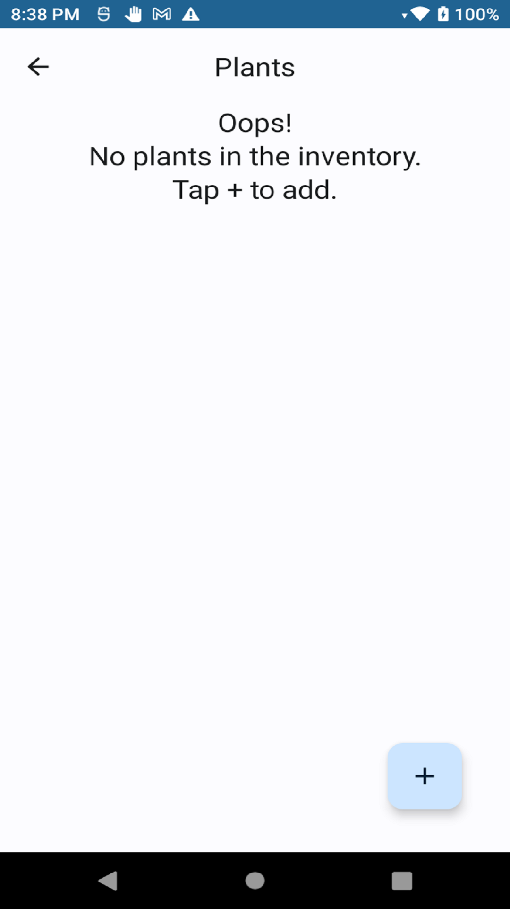
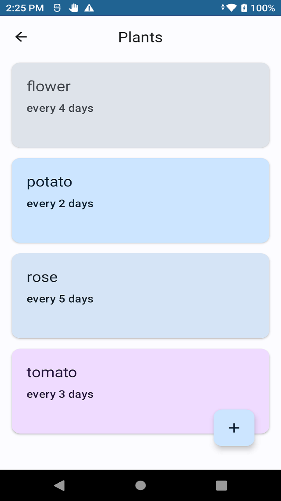
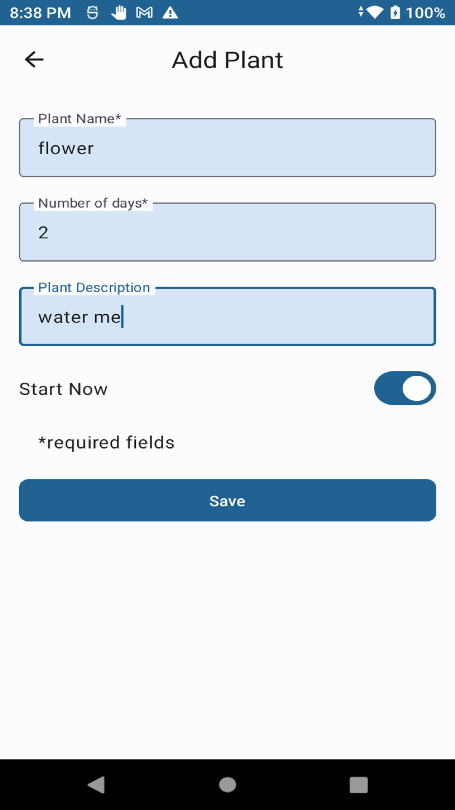
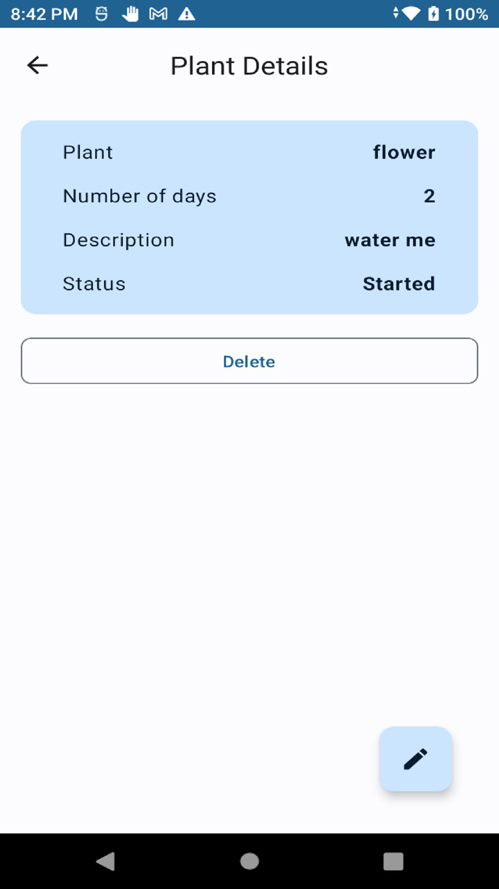

Water Me: A gardening App remind users to water plants based on weather. Users may set up remind schedules.
1. First Screen - before settings
Left icon is for refresh, middle icon is for Calendar, right icon is for Settings.
2. First Screen - after settings
Star means we have To Do Event for the day.

3. Second Screen - Settings
Please input Zip Code like 10001 or Name of place like New York City.
4. Third Screen - Plant Home before settings
5. Third Screen - Plant Home after settings
6. Fourth Screen - Plant Entry
7. Fifth Screen - Plant Details
8. Sixth Screen - Event
To Do Event is for Today, Non-Current Event is active but not for Today, Inactive Event is not active yet.
9. Seventh Screen - Calendar
Blue with underscore means we have To Do Event for the day.